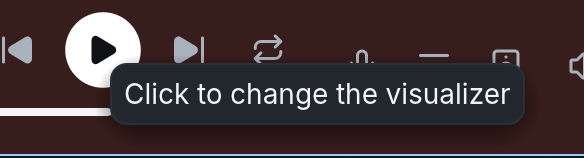
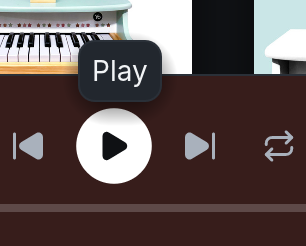

The pointer hovers the player bar's empty space until "Click to change the visualizer" shows, then moves onto the play button. Before, the visualizer tooltip follows the pointer onto the button. After, it closes on reaching the button, whose own tooltip takes over once it is due.
Baseline: crmne/spotifast main 7e2d6c5. Candidate: Magniquick/spotifast visualizer-tooltip-scope 11ebbf7.
No demo-mode captures: this state needs a live pointer hover or a hand scroll, which demo mode cannot script. The captures below come from the running app with each build.
Real-account captures on Linux (CachyOS, Hyprland), dark theme, normal window.

